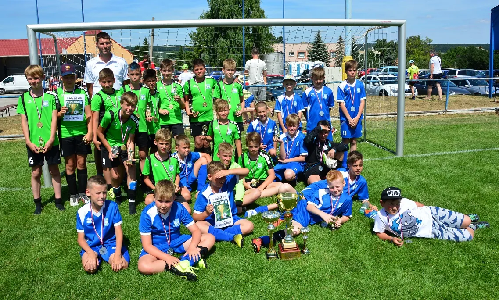

Slavoj Cup 2019
Turnaj prípraviek v Boleráze

Dňa 29.júna 2019 (sobota) od 9:00 hod. sa konal už 5.ročník turnaja prípraviek v Boleráze. Na turnaji štartovali kvalitné mužstvá z trnavského okresu, ktoré obsadili v tomto ročníku popredné miesta v tabuľkách. Aj preto boli výsledky vyrovnané. Najlepšie si počíňali naši chlapci, ktorí nenašli v piatych zápasoch premožiteľa.
| Boleráz "A" - Modranka | 2:0 | góly: Fajtl, Palšovič |
| Trakovice - Zvončín | 0:1 | gól: - Čechovič |
| Boleráz "A" - Smolenice | 6:0 | |
| Trakovice - Boleráz "B" | 4:0 | góly: Adam Bošácky-2, Šimon Bošácky, Ušák |
| Modranka - Smolenice | 5:0 | góly: Oskar Ondriáš-3, Simon Hutár, Juraj Blažek |
| Zvončín - Boleráz "B" | 7:1 | góly: Temňák, Čambal, Kovačič, Knapík, Kulina - Kolesík |
| Modranka - Trakovice | 4:4 | góly: Hutár, Bohunický, Ondriáš, Blažek - Kubíček-2, Šilhavý, Bošácky |
| Boleráz "A" - Zvončín | 2:1 | góly: Urban-2 - Knapík |
| Smolenice - Boleráz "B" | 6:1 | góly: Vosátko, Púchovský, Haberl, Janurík, Poliak - Kormúthová |
| Zvončín - Modranka | 3:4 | góly: Čambál-2, Knapík - Ondriáš-2, Kohút, Blažo |
| Boleráz "A" - Trakovice | 0:0 | |
| Boleráz "B" - Modranka | 0:10 | góly: Ondriáš-4, Blažek-2, Hutár, Jankovič-2, Bohunický |
| Smolenice - Zvončín | 2:3 | góly: Haberl, Poliak - Onderek, Čambal, Kulina |
| Boleráz "A" - Boleráz "B" | 11:1 | góly: Urban-2, Antošík-2, Hlavatý-3, Drobný-2, Petranský, |
| Fajtl - Kolesík | ||
| Trakovice - Smolenice | 0:1 | gól: - Kovarský |
| Poradie | Tím | Z | V | R | P | Skóre | B |
|---|---|---|---|---|---|---|---|
| 1. | Boleráz "A" | 5 | 4 | 1 | 0 | 21:2 | 13 |
| 2. | Modranka | 5 | 3 | 1 | 1 | 23:9 | 10 |
| 3. | Zvončín | 5 | 3 | 0 | 2 | 15:9 | 9 |
| 4. | Smolenice | 5 | 2 | 0 | 3 | 9:15 | 6 |
| 5. | Trakovice | 5 | 1 | 2 | 2 | 8:6 | 5 |
| 6. | Boleráz "B" | 5 | 0 | 0 | 5 | 3:38 | 0 |
Najlepší strelec: 10 gólov - Oskar Ondriáš (Modranka)
Najlepší hráč: Marek Drobný (Boleráz)
Najlepší brankár: Bruno Greguš (Smolenice)
Zdroj: starý web klubu slavojboleraz.webnode.sk, prevzaté 16. 11. 2026 bez úprav údajov.